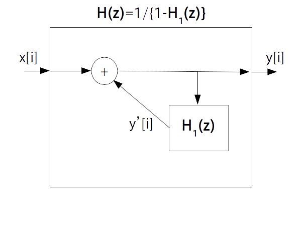
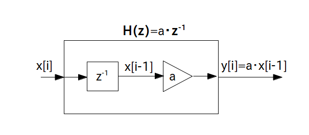
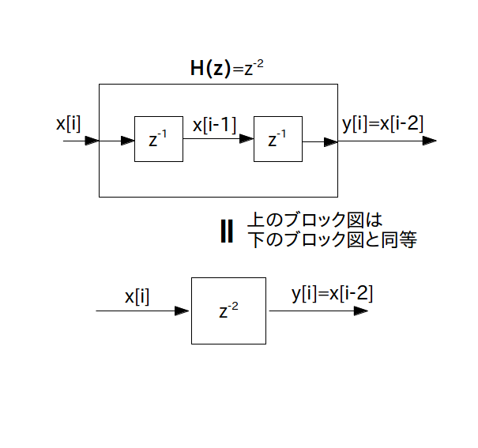
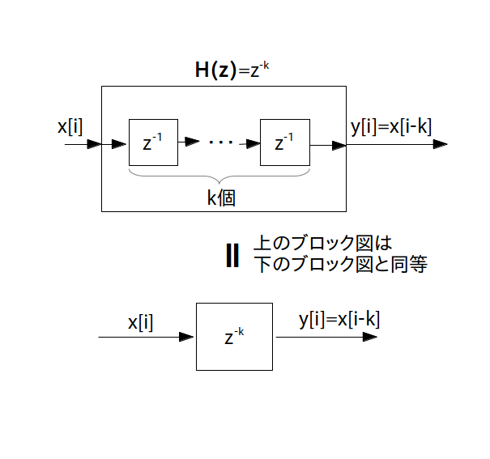
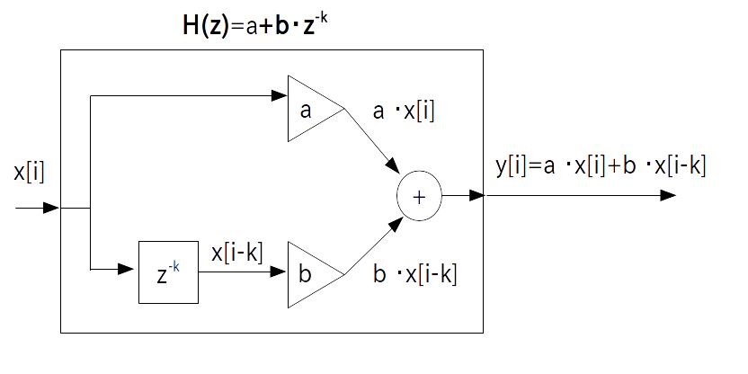
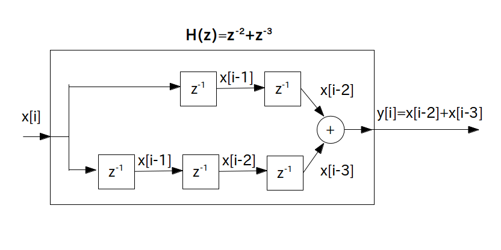
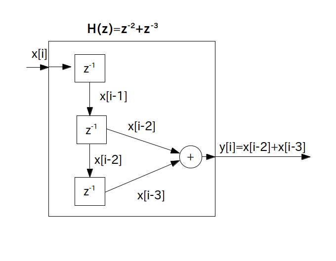

フィルタの合成方法とフィードバック機構を学びましたので、これでようやく目的であった「伝達関数→ブロック図→プログラム表現」の変換ができるようにになりました。
基本的なやり方は、伝達関数を直列結合・並列結合・フィードバック機構の 3 構造に分け、さらにそれぞれを乗算器、遅延素子を使って描き直すことです。ただしこれをやるのは結構慣れが必要なので、このページでは簡単な伝達関数→ブロック図の変換例をいくつか紹介したいと思います。
という伝達関数を持つフィルタは乗算器 $\textrm{H}_1(z) = a$ と乗算器 $\textrm{H}_2(z) = b$ の直列結合と考えられますので結局乗算器 1 つだけのブロック図に変わります。
この時のブロック図は次の通りです。

プログラム表現は次の通りです。
y[i] = (a * b) * x[i]
という伝達関数を持つフィルタは乗算器 $\textrm{H}_1(z) = a$ と遅延素子 $\textrm{H}_2(z) = z^{-1}$ の直列結合と考えられます
この時のブロック図は次の通りです。なお一般的に乗算器は遅延素子の後に置くことが多いのでこの図では乗算器と遅延素子の順番を入れ替えています(もちろん乗算器→遅延素子の順でも問題ないです)。

プログラム表現は次の通りです。
y[i] = a * x[i-1]
という伝達関数を持つフィルタは遅延素子 $\textrm{H}_1(z) = z^{-1}$ と 遅延素子 $\textrm{H}_2(z) = z^{-1}$ の直列結合と考えられますが、これを $z$ の項でまとめると伝達関数は
\begin{align*} \textrm{H}(z) = z^{-2} \end{align*}となります。
この伝達関数を持つフィルタを「2時刻遅延素子」と呼び、入力が 2 時刻遅れて出てくるフィルタになります。2時刻遅延素子の時のブロック図は次の通りです。

プログラム表現は次の通りです。
y[i] = x[i-2]
同様に遅延素子を $k$ 個直列結合することで「$k$ 時刻遅延素子」を作ることが出来ます。 伝達関数は
\begin{align*} \textrm{H}(z) = z^{-k} \end{align*}で、ブロック図は次の通りです。

プログラム表現は次の通りです。
y[i] = x[i-k]
という伝達関数を持つフィルタは乗算器 $\textrm{H}_1(z) = a$ と 乗算器 $b$ と $k$ 時刻遅延素子 $z^{-k}$ を直列結合した $\textrm{H}_2(z) = b \cdot z^{-k}$ の並列結合と考えられます
この時のブロック図は次の通りです。$\textrm{H}_1(z) = a$ と $\textrm{H}_2(z) = b \cdot z^{-k}$ が加算器で結合されています。

プログラム表現は次の通りです。
y[i] = a * x[i] + b * x[i-k]
という伝達関数を持つフィルタは$2$ 時刻遅延素子 $\textrm{H}_1(z) = z^{-2}$ と $3$ 時刻遅延素子 $\textrm{H}_2(z) = z^{-3}$ の並列結合と考えられます
この時のブロック図を素直に描くと次の通りになります。$\textrm{H}_1(z) = z^{-2}$ と $\textrm{H}_2(z) = z^{-3}$ が加算器で結合されています。

ただし、このブロック図のままだと遅延素子が無駄に多く含まれていてもったいないので、$k$ 時刻遅延素子を並列結合する場合は一般的には遅延素子を一部共通化して次の様なブロック図にします。

プログラム表現は次の通りです。
y[i] = x[i-2] + x[i-3]